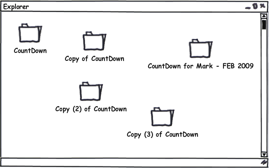

10 consejos para un mejor software (de) científico(s)

Quién soy
- Compañero de Nati, Zamba y Minou
- Hincha de Boca y del dulce de leche
- Ingeniero en Computación (UNC)
- Pythonista desde 2007
- Emprendedor en @Phasety
- Trabajo con químicos que programan
Sobre esta charla
De un hombre de software, a los hombres y mujeres de la academia, con respeto y cariño.
Source: yo
Also Known As:
catarsis | solidaridad | pedido de auxilio
En general ¿qué hace el software (de) científico(s)?
- Herramienta de exploración de problemas
- Nicho muy específico
- Modelado numérico / simulación
- Manipulación de datos
- Gráficos
Problemas comunes
- Ciclo prueba-error-corrección lento
- Documentación escasa
- Múltiples herramientas para lograr un resultado
- Limitaciones de scope del lenguaje ("no escala")
- ¿Pirata yo?
Y sobre todo...
Inercia académica
No sigas las huellas de tus maestros. Busca lo que ellos buscaron.
Source: Matsuo Bashō
Consejo 1:
Pare de sufrir
Use Python (y su stack científico)

Python es una lenguaje versátil, interactivo, simple y documentado

(muy) Fácil de aprender
con sintáxis legible y expresiva
Dinámico, multiparadigma, tipado fuerte
Interpretado, Interactivo, Extensible
Multiplataforma, Libre y Gratis
Gran documentación y bibliotecas
y una maravillosa comunidad de usuarios
con sintáxis legible y expresiva
Dinámico, multiparadigma, tipado fuerte
Interpretado, Interactivo, Extensible
Multiplataforma, Libre y Gratis
Gran documentación y bibliotecas
y una maravillosa comunidad de usuarios
Ideal para ciencias e ingenierías
#EsPregunta
¿Les cobran por vocal?
DIMENSION FGx(2),FGy(2),FGTx(2),FGTy(2),FGVx(2),FGVy(2) DIMENSION DFGNx(2,2),DFGNy(2,2) DIMENSION DPDNx(2),DPDNy(2),XOLD(5),OLD(5)
Consejo 2:
Programe para humanos
Especialmente para Ud mismo, luego del fin de semana largo.
Programs must be written for people to read, and only incidentally for machines to execute.
Source: Abelson & Sussman, Structure and Interpretation of Computer Programs
Ésta la conozco
From: Juan <subdito@todavianosegit.edu> To: Dr. God <sersuperior@todavianosegit.edu> Subject: Trabajo Doctor, acá le mando el zip con la última versión que incluye mi parte del paper ----
From: Dr. God <sersuperior@todavianosegit.edu> To: Juan <subdito@todavianosegit.edu> Subject: Re: Trabajo Estimado Juan me olvidé de avisarle que María modificó esa parte y cambiaron los parámetros de la función. Por favor, revise el último código que le adjunto.
Ésta también
Consejo 3:
Usá control de versiones
Aprendé GIT
- Cambios incrementales
- Trabajo colaborativo: qué, quién, cuándo (para qué)
- Branchs: libertad para experimentar
- Backups
- Dropbox no es una solución
Ay, ¡los inputs!
1 0 0 CARBON DIOXIDE 304.21 73.83 0.22362 0.114197 3.7042 0.029682 0.823228 ETHANE 305.32 48.72 0.09949 0.173685 5.6544 0.045144 0.634870 0.0 0.0 200.0
Consejo 4:
La interactividad es poder!
"API programable FTW!"
Si no queda otra (configuración):
- Usá estándares: por ejemplo json o YAML.
- Dale semántica a los datos
- "Simple is better than complex.
Explicit is better than implicit"
Source: The Zen of Python
Efecto model2param.for
El código se copia fácil. Los bugs también.
Consejo 5:
Don't Repeat Yourself

Bienvenidos al código (de un) científico

Consejo 6:
¡Modularizá!

La mochila de los parámetros
CALL SUP(x1,y1,x2,y2, sup_out) CALL PER(x1,y1,x2,y2, per_out)
Consejo 7:
Programá tan alto como puedas
buscá efectividad
class Rectangulo(object): def __init__(self, punto1, prunto2): self.punto1 = punto1 self.punto2 = punto2 def superficie(self): return abs((self.punto1.x - self.punto2.x) * (self.punto1.y - self.punto2.y)) def perimetro(self): ...
¡A tu grandeza, Newton!
subroutine mi_newton(f, fp, x0, x, iters, debug)
!esta funcion implementa el metodo de Newton para
!encontrar el 0 de una función fReally?
Consejo 8:
No reinventes la rueda
If I have seen further it is by standing on the shoulders of giants.
Source: Sir Isaac Newton
Tip: scipy.optimize.newton
Hacer software no es sólo escribir código
Comentarios, documentos, diagramas.
son bienvenidos
son bienvenidos
Atenti:
no se trata de describir el código que podemos leer.
Consejo 9:
documentar!
ipython notebook es genial.
Probar programas es agotador
Consejo 10:
que la computadora trabaje por vos
¡Unittests!
(programitas que prueban (partes) de programas)
def test_suma():
assert suma(2, 2) == 4Los tests te dan seguridad
Mejorar sabiendo que funciona
Una más ?
Intentá siempre,
siempre,
aprender más
Por lo tanto
Consejo de yapa:
vení mañana
Jueves y viernes 10hs
Tutorial de introducción a Python Científico
Muchas gracias